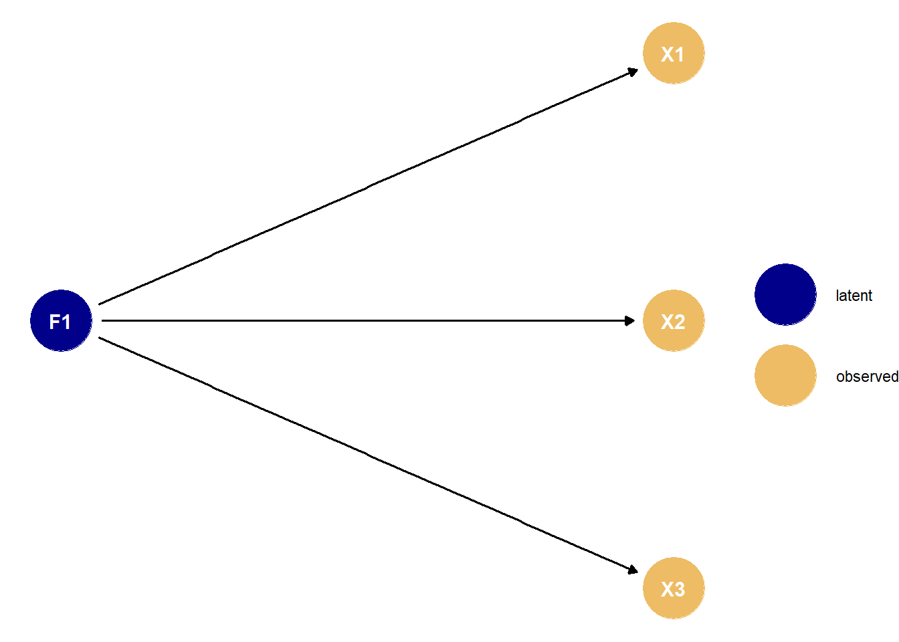
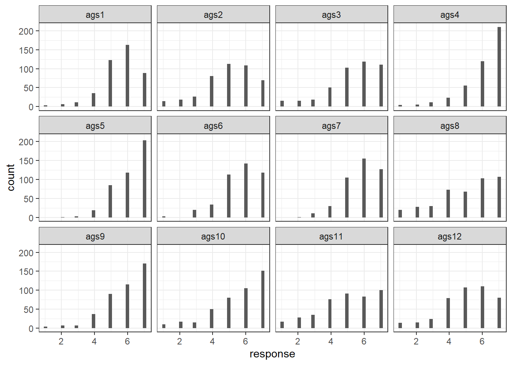
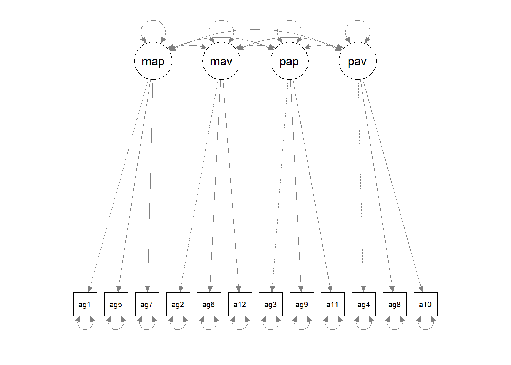
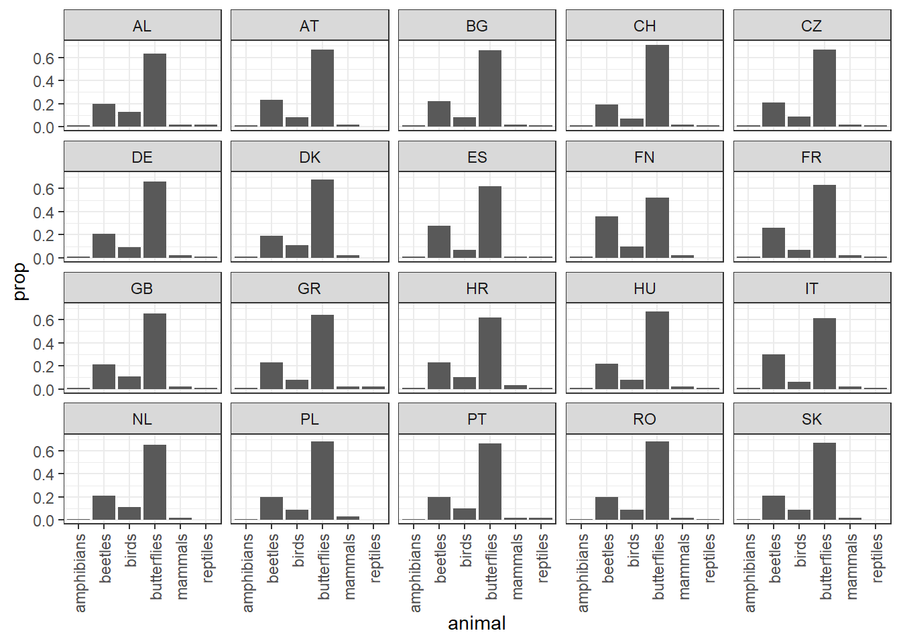
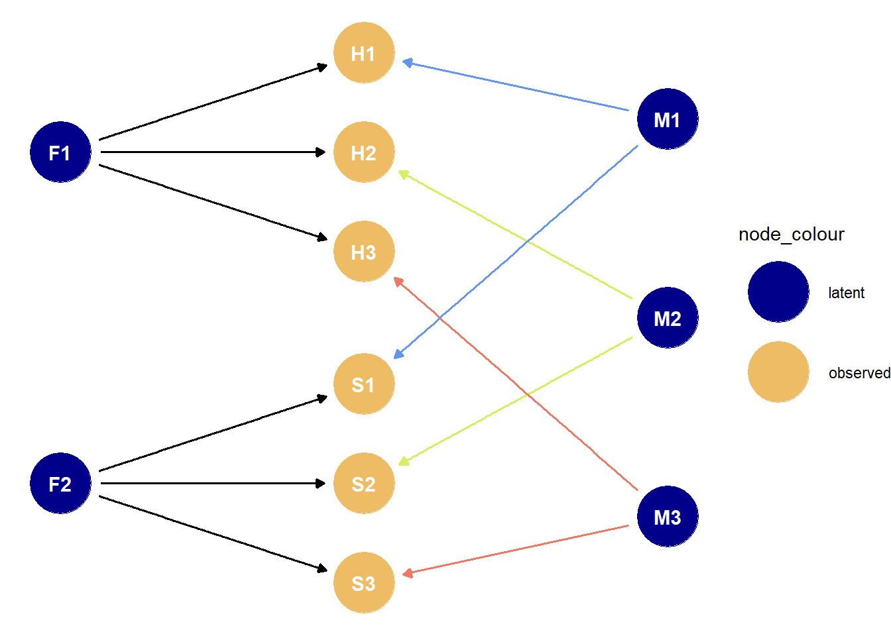

library(tidyverse)
library(lavaan)
library(ggdag)2 CFA
The Whole Game
I think it is safe to say that The Whole Game of Confirmatory Factor Analysis (CFA) is that I’m trying to convince my colleagues that my observed variables are confounded by some unmeasured variables. Usually I’m trying to show that the variables are confounded in a very particular way, where a few small groups of variables are confounded only by one unmeasured variable per group.
So here’s the architypal DAG of a CFA, where the Xs are observed variables, and F1 is an unmeasured variable I am imagining to exist.
# Set DAG coordinates
dag_coords <- list(
x = c(
F1 = 1,
X1 = 2,
X2 = 2,
X3 = 2
),
y = c(
F1 = 1.5,
X1 = 1.8,
X2 = 1.5,
X3 = 1.2
)
)
# Set DAG relationships and aesthetics
measurement_confounding_dag <- ggdag::dagify(
X1 ~ F1,
X2 ~ F1,
X3 ~ F1,
coords = dag_coords
) %>%
tidy_dagitty() %>%
mutate(
` ` = case_when(
grepl("^F", name) ~ "latent",
grepl("^X", name) ~ "observed"
))
# Plot the DAG
measurement_confounding_dag %>%
ggplot(aes(x = x, y = y, xend = xend, yend = yend)) +
geom_dag_point(aes(colour = ` `)) +
scale_colour_manual(values = c("dark blue", "#edbc64")) +
geom_dag_edges() +
geom_dag_text() +
theme(legend.title = element_blank()) +
theme_void()
The Whole Game of CFA is to convince your reader that the patterns of variance and covariance in your data are consistent with the above DAG (or some other version of it).
The classic way of testing whether your data are consistent with a DAG is to condition on some of the variables, perhaps by including it as a predictor in a linear regression model, and see whether the patterns of correlation change in the ways the DAG expects based on the rules of d-separation. For the above DAG, this would mean controlling for F1 and seeing whether the correlations between X1, X2, and X3 decrease as a result.
But in CFA we always assume the confounder is unmeasured, so we can’t directly control for it. Instead, we can only try to argue for our DAG in a more hand-wavy sort of way: we expect confounded variables to be correlated with each other, and uncounfounded variables to not be correlated with each other. This is why we focus on the empirical correlation matrix as the basis for our model: if a few of my variables are very correlated with each other then that is consistent with them being confounded by the same unobserved variable. But it is not proof! You can never prove a DAG, after all.
So interpreting a CFA model is all about checking to see whether the correlations between the variables are consistent with what we would expect to see under the DAG where each group of variables is confounded by a single unmeasured variable.
Let’s look at some examples of how people have liked to make the case for their missing-confounder DAG.
Example 1: Toxic Striving Energy
The first example we’ll look at is from Finch (2015), chapter 3. The practice dataset is introduced on page 10. It is from a study about human motivation. The dataset is a weird questionnaire called the ‘Achievement Goal Scale’ (AGS), which asks people 12 questions about how much toxic striving energy they have. The dataset provided seems to have lots of mysterious columns in it, but we’re probably good to just keep the columns with responses to the AGS questionnaire:
### Load the data
dat_raw <- foreign::read.spss('data/finch-and-french/edps744.sav')
### Clean the data
dat_ags <- dat_raw %>%
# Convert to a data frame for ease of use
as.data.frame() %>%
# Keep only columns that start with the prefix 'ags' followed by a question number
select(matches("ags\\d")) Data Exploration
We don’t want to do too much exploration before fitting our factor models, because the whole game of CFA is to commit to our hypotheses before checking what the data looks like, so we don’t mislead ourselves with forking paths. But just for fun, we can explore the distributions of the answers to each of the 12 questions:
dat_ags %>%
# Pivot to prepare the data for visualization
pivot_longer(
cols = everything(),
names_to = "question",
values_to = "response",
names_transform = list(question = fct_inorder)
) %>%
# Plot
ggplot() +
geom_histogram(aes(x = response)) +
theme_bw() +
facet_wrap(~question)
Seems like some questions have different means and variances from each other. For example, the answers to ags11 and ags12 are relatively flat, while the answers to ags4 and ags5 are more bunched up around the highest values. The responses clearly skew towards higher values in aggregate.
We can also do some healthy exploration of missingness in the dataset. For starters: what proportion of values are missing in each row?
dat_ags %>%
# Calculate the proportion of missing values
summarise_all(~ sum(is.na(.)) / (sum(is.na(.) + sum(!is.na(.))))) %>%
# Rounding to make the results more presentable
mutate(across(everything(), round, 6)) %>%
# Create the table
knitr::kable(title = "Proportion of Missing Responses in Each Column") | ags1 | ags2 | ags3 | ags4 | ags5 | ags6 | ags7 | ags8 | ags9 | ags10 | ags11 | ags12 |
|---|---|---|---|---|---|---|---|---|---|---|---|
| 1.1e-05 | 5e-06 | 5e-06 | 1.6e-05 | 1.6e-05 | 1.1e-05 | 1.6e-05 | 1.6e-05 | 1.1e-05 | 2.2e-05 | 1.1e-05 | 1.6e-05 |
That’s very little missingness. Probably no need to do multiple imputation here.
The authors also do a preliminary test of whether the responses are normally distributed, since this is one of the fundamental assumptions of maximum likelihood estimation. Kristoffer Magnusson has created a cool interactive teaching tool that nicely illustrates this point. It is worth remembering that we do not make this type of assumption for linear regression in general – only for maximum likelihood estimates. All we need assume for linear regression is that the residuals are normally distributed, as opposed to the data themselves. This common misunderstanding can lead researchers to commit what Richard McElreath has called ‘histomancy’.
To evaluate the assumption of normalness underlying maximum likelihood estimation, the authors do what seems to be a multivariate version of a classic ‘normal probability plot’. These are explained nicely in this stack exchange thread. They also produce some of the classic tests of skew and kurtosis, which I don’t want to get into here. This youtuber has nice introductory videos about these topics.
# Run the Mardia tests for normalness
mardia.object <- psych::mardia(dat_ags)
# Plot the multivariate version of the normal probability plot
plot(mardia.object)
# Present the outputs we're interested in
tibble(
"Skew" = mardia.object$skew,
"Skew p-value" = mardia.object$p.skew,
"Kurtosis" = mardia.object$kurtosis,
"Kurtosis p-value" = mardia.object$p.kurt
) %>%
knitr::kable()| Skew | Skew p-value | Kurtosis | Kurtosis p-value |
|---|---|---|---|
| 2359.475 | 0 | 40.52999 | 0 |
The plotted points don’t seem to fit the straight line super well, which suggests that the normalness assumption may not hold here. Also, the hypothesis tests for skew and kurtosis return some mighty low p-values, suggesting that we’ve got lots of each of them. So maybe maximum likelihood estimation isn’t such a good idea here?
The authors proceed with it anyway for pedogogical reasons, because they want to illustrate how the maximum likelihood estimates differ from estimates arrived at using other methods.
“In actual practice, given the lack of multivariate normality that seems apparent in the previous results, we would likely not use ML and instead rely on the alternative estimation approach.”
Model Fitting
The researchers who collected the data do what good factor analysts do: they look to the literature to set up some clear and specific candidate hypotheses, and see the degree to which this new data is compatible with each of them.
One of the candidate hypotheses is that a person’s toxic striving energy (‘achievement goal orientedness’?) is secretly driven by four platonic unobservable things, namely:
Mastery Approach ‘MAP’ (eg. “I want to learn as much as possible”);
Mastery Avoidant ‘MAV’ (eg. “I want to avoid learning less than I possibly could”);
Performance Approach ‘PAP’ (eg. “I want to do well compared to other students”);
Performance Avoidant ‘PAV’ (eg. “It is important for me to avoid doing poorly compared to other students”)
We’ll call the above hypothesis H1. But there’s another hypothesis that says actually the ‘Mastery’ variables are just one monolithic thing, so really there are only 3 factors, namely ‘Mastery’, ‘PAP’, and ‘PAV’. We’ll call this one H2. These will be the two candidate hypotheses we’re gonna test via factor analysis.
The way lavaan works is that you need to separately define the model syntax as a string, and then feed that string to one of the model-fitting functions like cfa() . Then we can call the summary() function to get a big table of outputs.
# Define the relationships from my hypothesis
h1.definition <-
'map=~ags1+ags5+ags7
mav=~ags2+ags6+ags12
pap=~ags3+ags9+ags11
pav=~ags4+ags8+ags10'
# Fit the model
h1.fit <- cfa(
data = dat_ags,
model = h1.definition
)
# Look at the results
h1.summary <- summary(h1.fit, fit.measures = TRUE, standardized = TRUE)
h1.summarylavaan 0.6-12 ended normally after 48 iterations
Estimator ML
Optimization method NLMINB
Number of model parameters 30
Used Total
Number of observations 419 432
Model Test User Model:
Test statistic 328.312
Degrees of freedom 48
P-value (Chi-square) 0.000
Model Test Baseline Model:
Test statistic 3382.805
Degrees of freedom 66
P-value 0.000
User Model versus Baseline Model:
Comparative Fit Index (CFI) 0.915
Tucker-Lewis Index (TLI) 0.884
Loglikelihood and Information Criteria:
Loglikelihood user model (H0) -7014.070
Loglikelihood unrestricted model (H1) -6849.914
Akaike (AIC) 14088.141
Bayesian (BIC) 14209.277
Sample-size adjusted Bayesian (BIC) 14114.078
Root Mean Square Error of Approximation:
RMSEA 0.118
90 Percent confidence interval - lower 0.106
90 Percent confidence interval - upper 0.130
P-value RMSEA <= 0.05 0.000
Standardized Root Mean Square Residual:
SRMR 0.055
Parameter Estimates:
Standard errors Standard
Information Expected
Information saturated (h1) model Structured
Latent Variables:
Estimate Std.Err z-value P(>|z|) Std.lv Std.all
map =~
ags1 1.000 0.840 0.746
ags5 0.774 0.057 13.564 0.000 0.650 0.682
ags7 1.100 0.064 17.263 0.000 0.924 0.895
mav =~
ags2 1.000 0.923 0.627
ags6 0.974 0.078 12.523 0.000 0.899 0.796
ags12 1.039 0.096 10.805 0.000 0.959 0.644
pap =~
ags3 1.000 1.284 0.840
ags9 0.853 0.038 22.349 0.000 1.095 0.870
ags11 1.103 0.052 21.178 0.000 1.416 0.841
pav =~
ags4 1.000 0.929 0.771
ags8 1.599 0.084 19.091 0.000 1.486 0.855
ags10 1.525 0.073 20.861 0.000 1.418 0.921
Covariances:
Estimate Std.Err z-value P(>|z|) Std.lv Std.all
map ~~
mav 0.709 0.079 9.000 0.000 0.914 0.914
pap 0.066 0.060 1.093 0.274 0.061 0.061
pav 0.056 0.043 1.289 0.197 0.072 0.072
mav ~~
pap 0.163 0.072 2.265 0.023 0.138 0.138
pav 0.178 0.053 3.355 0.001 0.207 0.207
pap ~~
pav 1.143 0.102 11.236 0.000 0.958 0.958
Variances:
Estimate Std.Err z-value P(>|z|) Std.lv Std.all
.ags1 0.562 0.047 11.951 0.000 0.562 0.443
.ags5 0.486 0.038 12.780 0.000 0.486 0.535
.ags7 0.211 0.032 6.602 0.000 0.211 0.198
.ags2 1.312 0.102 12.825 0.000 1.312 0.606
.ags6 0.469 0.049 9.537 0.000 0.469 0.367
.ags12 1.300 0.103 12.669 0.000 1.300 0.586
.ags3 0.690 0.059 11.671 0.000 0.690 0.295
.ags9 0.386 0.036 10.769 0.000 0.386 0.244
.ags11 0.831 0.071 11.639 0.000 0.831 0.293
.ags4 0.588 0.045 12.959 0.000 0.588 0.405
.ags8 0.815 0.070 11.602 0.000 0.815 0.269
.ags10 0.362 0.043 8.423 0.000 0.362 0.153
map 0.706 0.083 8.514 0.000 1.000 1.000
mav 0.852 0.128 6.655 0.000 1.000 1.000
pap 1.648 0.158 10.416 0.000 1.000 1.000
pav 0.864 0.094 9.198 0.000 1.000 1.000semPlot::semPaths(h1.fit)
That’s a lot of outputs. Let’s break down the output into smaller bite-sized chunks.
Goodness of Fit Statistics
Chi-Squared Statistic
The first thing to look at is the chi-squared statistic from the ‘User Model’, IE the model I, the user, have just fit. I like to think of this as a measure of how different the model’s reconstructed correlation matrix looks compared to the actual empirical correlation matrix of the data. So we use this statistic to test the null hypothesis “there is no significant difference between model’s reconstructed correlation matrix and the empirical one”. So, confusingly, we’re actually hoping to accept the null hypothesis here. This model returns a value of 328.312 with a vanishingly small p-value, so we reject the null hypothesis, which is bad: it suggests our model isn’t doing a good job replicating the empirical correlation matrix.
Here’s a quote from Gorsuch (1983) that explains this stuff from the slightly different angle:
“The test of significance [for a CFA model fit by maximum likelihood] gives a chi-square statistic with the null hypothesis being that all the population covariance has been extracted by the hypothesized number of factors. If the chi-square is significant at the designated probability level, then the residual matrix still has significant covariance in it.”
So this chi-squared statistic provides a first look at goodness-of-fit, but Finch (2015) say it is actually not very trustworthy in practice because the null hypothesis is sort of crazy: we want a more permissive test than just whether the model is perfectly recreating the empirical correlation matrix.
“this statistic is not particularly useful in practice because it tests the null hypothesis that [the model-reconstructed correlation matrix is equal to the empirical correlation matrix], which is very restrictive. The test will almost certainly be rejected when the sample size is sufficiently large… In addition, the chi-square test relies on the assumption of multivariate normality of the indicators, which may not be tenable in many situations.”
So we’re gonna wanna look at statistics other than just chi-squared for goodness-of-fit, but it seems like a fine place to start. Let’s look at the chi-squared statistic of our model:
### Create a nice summary table
tibble(
Test = "standard chi-squared",
`DF` = h1.summary$test$standard$df,
`Test Statistic` = round(h1.summary$test$standard$stat, 2),
`p-value` = h1.summary$test$standard$pvalue
) %>%
mutate(across(everything(), as.character)) %>%
pivot_longer(everything()) %>%
knitr::kable()| name | value |
|---|---|
| Test | standard chi-squared |
| DF | 48 |
| Test Statistic | 328.31 |
| p-value | 0 |
It takes lots of skill and experience to have a sense of whether a test statistic is big or small given the degrees of freedom at play, but we can see from the p-value that we reject the null hypothesis in a big way. This is bad – it suggests that, given our assumptions, there’s a big difference between our model and the data.
Root Mean Squared Error Approximation (RMSEA)
Another one people like to go with is the Root Mean Squared Error Approximation (RMSEA). This statistic takes some math and background to understand, which I’m not going to go over here. I found this document to be the clearest (but also pretty mathy) explanation.
Essentially, RMSEA is a weighted sum of the discrepancies between the model’s reconstructed correlation matrix and the empirical correlation matrix. But it also does a nice thing where it discounts model complexity and sample size to help us not overfit. Here’s the definition:
\(\text{RMSEA} = \sqrt{\dfrac{χ^2 - \text{df}}{\text{df}(n-1)}}\)
See how it takes the chi-squared statistic and divides it by degrees of freedom (as a proxy for model complexity) and sample size? This makes for a more conservative measure of goodness-of-fit. Apparently the square-root is used “to return the index to the same metric as the original standardized parameters”. I don’t really understand that part… is it because a Chi-squared random variable is the squared version of a normal standard variable?
As with the raw chi-squared statistic, we want RMSEA to be small because it is intended as a measure of the distance between the empirical correlation matrix and the model-estimated correlation matrix. According to Finch (2015), people like to say:
RMSEA <= 0.05 is a ‘good fit’;
0.05 < RMSEA <= 0.08 is an ‘ok fit’
RMSEA > .08 is a ‘bad fit’.
Let’s check the RMSEA of our model:
# make a nice summary table
h1.summary$fit %>%
as_tibble(rownames = "stat") %>%
filter(str_detect(stat, "rmsea")) %>%
knitr::kable()| stat | value |
|---|---|
| rmsea | 0.1180574 |
| rmsea.ci.lower | 0.1061525 |
| rmsea.ci.upper | 0.1303058 |
| rmsea.pvalue | 0.0000000 |
Yikes – looks like our whole RMSEA, as well as its confidence interval, are above the ‘bad fit’ conventional threshold of .08. This corroborates what we saw with the chi-squared statistic above.
Comparative Fit Index (CFI) and Tucker-Lewis Index (TLI)
CFI seems to be the most trusted and widely-used tool for assessing goodness of fit in a CFA. Basically the idea is that we ask: “how much does the chi-squared statistic of my model differ from the chi-squared statistic of the worst model I can think of?”, where the conventional “worst model I can think of” is the model where I assume all of my observed variables are totally uncorrelated. This sort of has the opposite flavour of the deviance statistic I’m already familiar with, which compares the current model with “the best model I can think of.”
\(\text{CFI} = 1 - \dfrac{\text{max}(χ^2_T - \text{df}_T, 0)}{\text{max}(χ^2_0 - \text{df}_0, 0)}\)
Actually, the numerator and denominator are both equal to the ‘non-centrality parameter’ of their respective candidate distributions. I’m not gonna get into this, but this is an idea that also shows up in power analysis as a way of comparing the null and candidate hypotheses.
We want to end up with a CFI as close to 1 as possible, because that suggests a big difference between my model and the worst possible model. So people say we can sort of think of this as analogous to \(R^2\) from linear regression. People seem to have adopted 0.95 as am arbitrary cutoff for ‘good fit’ for the CFI.
If you want to learn more about the CFI, I found this article a well-written resource.
Tucker-Lewis Index seems to be pretty similar to CFI, and we interpret it in the same way. Let’s look at both of them:
# Make a nice summary table
h1.summary$fit %>%
as_tibble(rownames = "stat") %>%
filter(str_detect(stat, "cfi|tli")) %>%
knitr::kable()| stat | value |
|---|---|
| cfi | 0.9154874 |
| tli | 0.8837951 |
Looks like the CFI and TLI look ok, but don’t meet the conventional .95 cutoff. So they are in line with the chi-squared and RMSEA in suggesting that our goodness-of-fit isn’t so good.
Convergent Validty
Like I said before: when I’m doing factor analysis, my goal is to convince my research peers that my observed variables are confounded by an unobserved variable, and that therefore they provide a way of ‘measuring’ that unobserved variable. This seems like an ontologically dubious framing, and it also seems impossible to prove. But people who do research have settled on a few ways of trying to make this case.
One such way is to take all of the measured variables I’m imagining to be caused by the same unmeasured factor and show that they are indeed correlated with each other, because this is what we would expect under the simple DAG where they are all confounded by the same latent variable. When this happens, I can say that my factor has Convergent Validity. In the words of Gorsuch (1983):
“Convergent validity occurs when several variables deemed to measure the same construct correlate with each other.”
Or, as Kline (2011) puts it:
“Variables presumed to measure the same construct show convergent validity if their intercorrelations are appreciable in magnitude.”
It seems like to make the jump from ‘these measured variables are correlated’ to ‘these measured variables are caused by a single shared latent factor’ I would need to be also making the further assumption that there aren’t other unmeasured confounders muddying up the observed covariances. It’s DAGs all the way down…
Based on the textbooks I’m working from, here are a few questions I can answer if I want to make the case for Convergent Validity:
- Are the factor loadings statistically significant?
- Are the standardized factor loadings pretty big (IE pretty close to 1)?
- Are the standardized within-factor loadings pretty similar to each other?
- Do the measurements seem to have good ‘reliability’ as measured by something like Chronbach’s Alpha, Average Variance Extracted, or Composite Reliability?
- Are all of the residual variances less than .50, IE is the model explaining at least half the variance of each model?
First we can look at the factor loadings. These are essentially just the regression coefficients of each factor on each of the outcome variables for which it was allowed to be a covariate. So we want them to be big and significant.
### Make a nice summary table of the factor loadings
h1.summary$pe %>%
as_tibble() %>%
# Keep only the rows with info on factor loadings
slice(1:12) %>%
# Clean up the important values, then combine them into a single column
mutate(
std.all = round(std.all, 2),
std.all = paste0(std.all, ", pvalue = ", pvalue, ")")
) %>%
# reformat the table
select(lhs, rhs, std.all) %>%
pivot_wider(
names_from = "lhs",
values_from = "std.all",
values_fill = "0"
) %>%
column_to_rownames("rhs") %>%
knitr::kable(caption = "Standardized factor loadings and p-values")| map | mav | pap | pav | |
|---|---|---|---|---|
| ags1 | 0.75, pvalue = NA) | 0 | 0 | 0 |
| ags5 | 0.68, pvalue = 0) | 0 | 0 | 0 |
| ags7 | 0.9, pvalue = 0) | 0 | 0 | 0 |
| ags2 | 0 | 0.63, pvalue = NA) | 0 | 0 |
| ags6 | 0 | 0.8, pvalue = 0) | 0 | 0 |
| ags12 | 0 | 0.64, pvalue = 0) | 0 | 0 |
| ags3 | 0 | 0 | 0.84, pvalue = NA) | 0 |
| ags9 | 0 | 0 | 0.87, pvalue = 0) | 0 |
| ags11 | 0 | 0 | 0.84, pvalue = 0) | 0 |
| ags4 | 0 | 0 | 0 | 0.77, pvalue = NA) |
| ags8 | 0 | 0 | 0 | 0.85, pvalue = 0) |
| ags10 | 0 | 0 | 0 | 0.92, pvalue = 0) |
Firstly, notice that all of the non-fixed loadings are highly statistically significant, with all p-values smaller than .01. This is good! Super statistically-significant loadings are a necessary sign that our measured variables are actually good proxies for the imaginary ‘latent’ factor we’re purporting to use them to measure.
Next, Kline (2011) says that we can start assessing convergent validity by just looking at the standardized loadings can in isolation. In his words on page 344:
“[with reference to a CFA model he has fit]: A few other standardized coefficients are rather low, such as .433 for the self-talk indicator of constructive thinking, so evidence for convergent validity is mixed.”
To my eye it looks like some of the standardized loadings on the ‘mav’ factor are pretty low. Also, it seems like only ‘pap’ has really consistent loadings across all of its measured variables: the other three factors all have a bunch of variance between their loadings. So this all seems like a bit of a red flag.
Kline (2011), on page 307, gives yet another way of assessing convergent validity: he fits a CFA, then asks whether “the majority” of the variances of the observed variables have been explained, IE whether the standardized residual variances are <50. I guess the idea is that the amount of variance explained for a variable by a factor depends on how correlated In his words:
“[in reference to one of his models:] [the] model fails to explain the majority (> .50) of variance for a total of four out of eight indicators, which indicates poor convergent validity.”
Let’s have a look at the residual variances. These are just the proportion of the empirical variance of each measured variable that is left unexplained by the linear models that make up the factor analysis.
h1.summary$pe %>%
as.data.frame() %>%
filter(grepl("ags\\d", lhs)) %>%
mutate(factor = case_when(
lhs %in% c("ags1", "ags5", "ags7") ~ "map",
lhs %in% c("ags2", "ags6", "ags12") ~ "mav",
lhs %in% c("ags3", "ags9", "ags11") ~ "pap",
lhs %in% c("ags4", "ags8", "ags10") ~ "pav",
)) %>%
select(factor, "var" = lhs, std.all) %>%
knitr::kable()| factor | var | std.all |
|---|---|---|
| map | ags1 | 0.4434896 |
| map | ags5 | 0.5345470 |
| map | ags7 | 0.1980907 |
| mav | ags2 | 0.6063553 |
| mav | ags6 | 0.3670913 |
| mav | ags12 | 0.5858185 |
| pap | ags3 | 0.2950189 |
| pap | ags9 | 0.2436200 |
| pap | ags11 | 0.2927905 |
| pav | ags4 | 0.4050030 |
| pav | ags8 | 0.2694999 |
| pav | ags10 | 0.1526773 |
Looks like the model has mostly done a good job for the ‘Performance’ factors, with all variables having at least ~60% of their variance explained. But the ‘Mastery’ factors are worse, especially ‘mav’, with two of its three variables having only ~40% of their variances explained. This is yet more evidence that the ‘mav’ factor isn’t doing so great a job.
~~Lastly, Gorsuch suggests another way of testing for convergent validity:
factor loadings of several variables hypothesized to relate to the construct can also be tested for significance. They could be specified as equal for the one model and the chi-square for that model subtracted from another hypothesized factor structure where they are allowed to vary. If the two differ significantly from each other, then one or more of the variables is more related to the construct than one or more of the other variables.”
Let’s try this out: we’ll fit another model that assumes all of the within-factor loadings are equal, and see if that results in a statistically significant reduction in goodness-of-fit. If it does, then we lose some evidence of convergent validity.~~
Reliability
In looking for Convergent Validity we were mostly just comparing the parameter estimates (loadings) and residual variances of individual variables. We were trying to figure out whether these variables belong together. But in addition to tests of validity to decide which columns belong in the scale, people like to test the overall scale itself by invoking the terrible concept named ‘Reliability’. Reliability purports to be ‘true variance in the underlying construct’ as a proportion of ‘total variance in the scores of a subscale’. This seems to me like an ontologically dubious concept, but it’s what we’re working with.
This all feels pretty similar to Convergent Validity to me. We’re just trying to show that the data are consistent with all of the factor-level columns being confounded by the same variable.
The all-time classic ‘reliability’ measure is called Cronbach’s Alpha. Cronbach didn’t actually invent it, so hello Stigler’s Law. Here’s what it looks like:
\(\alpha = (\dfrac{k}{1-k}) (1 - \dfrac{\sum\sigma_y^2}{\sigma_T^2})\)
The term on the right is doing most of the work: its denominator is the variance of the column that contains the rowwise sums of my dataset. Its numerator is the sum of the variances of each column. So we’re asking: ‘is the variance of the sums larger than the variance of the individual columns?’ This will be true if the columns are generally pretty correlated, because the sums will stack up the raw values, instead of them cancelling each other out. So really we’re just asking: are the columns generally pretty correlated?‘. If my columns are pretty correlated and I make the standard assumption that no other latent factors are influencing my observed values (an insane assumption), then I can feel comfortable saying that Cronbach’s Alpha is useful for figuring out whether my measurements are all loading on the same ’latent’ variable. Since the observed values are gonna be consistent with each other if this is true, people like to say that Cronbach’s Alpha gives a picture of ‘Internal Consistency Reliability’.
Like with Convergent Validity, this is all just another way of asking how correlated my within-factor measured variables are with each other.
Let’s calculate Cronbach’s Alpha for each of the subscales I’ve used to define my supposed factors:
### Split the dataset into the subscales assumed by my factor model
subscales <- list(
map = dat_ags %>% select(ags1, ags5, ags7),
mav = dat_ags %>% select(ags2, ags6, ags12),
pap = dat_ags %>% select(ags3, ags9, ags11),
pav = dat_ags %>% select(ags4, ags8, ags10)
)
### Calculate Chronbach's Alpha for each subscale, then analyze.
alphas <- subscales %>%
map(psych::alpha) %>%
map(summary) %>%
knitr::kable()
Reliability analysis
raw_alpha std.alpha G6(smc) average_r S/N ase mean sd median_r
0.82 0.82 0.76 0.6 4.6 0.015 5.9 0.9 0.6
Reliability analysis
raw_alpha std.alpha G6(smc) average_r S/N ase mean sd median_r
0.77 0.77 0.71 0.52 3.3 0.018 5.3 1.2 0.45
Reliability analysis
raw_alpha std.alpha G6(smc) average_r S/N ase mean sd median_r
0.88 0.89 0.84 0.73 7.9 0.0095 5.4 1.3 0.74
Reliability analysis
raw_alpha std.alpha G6(smc) average_r S/N ase mean sd median_r
0.87 0.88 0.85 0.7 7.1 0.01 5.6 1.3 0.72According to Kline (2011), these all look like good results, so they help me feel good about claiming convergent validity:
“Generally, coefficients around .90 are considered”excellent,” values around .80 as “very good,” and values about .70 as “adequate.””
Cronbach’s Alpha has some drawbacks as a measure of ‘reliability’, which seem pretty clear to me. For example, as (Brown?) explains:
What if some of the items in my subscale are confounded by something other than our latent factor? That could make things crazy, IE it could overstate or understate the ‘true’ Cronbach Alpha.
Even if there’s no other confounding at all, my Cronbach Alpha is going to be understated if my variables are all influenced by the factor to different degrees, IE if the loadings are different, IE if the variables are not ‘Tau-Equivalent’. And this will almost always be the case”
“The condition of tau equivalence is frequently not realized in actual data sets, in part because the units of measurement are often arbitrary.”
so Kline (2011) says to also calculate the Average Variance Extracted (AVE), which is simply the average of the within-factor squared factor loadings. This is based on the idea that a squared factor loading is the variance explained of the variable by that factor. The convention is that if the AVE > 0.5, then you can feel good about claiming convergent validity. I guess this makes sense – seems like a pretty simple and ad-hoc way of asking whether your loadings are generally on the same page. But obviously if I have lots of observed variables defining the factor then I’m at risk of having a bunch of high loadings and a bunch of low loadings, resulting in a misleadingly moderate average? To me it seems like we might as well just look at the raw loadings themselves – no need to look at an average here.
But just for fun, let’s calculate the AVE. Rather than doing it manually, we can use a ready-made function from the semTools package
semTools::AVE(h1.fit) %>%
knitr::kable()| x | |
|---|---|
| map | 0.6115914 |
| mav | 0.4556936 |
| pap | 0.7179750 |
| pav | 0.7422385 |
Based on the rule-of-thumb that we want the AVE to be at least .50, it seems like the ‘mav’ factor is having some trouble. It also had the lowest Cronbach Alpha. So maybe the observed variables I’m using to measure it aren’t actually doing a great job? This hurts convergent validity for that factor.
Lastly, we can also try to measure this unicorn of ‘reliability’ by just directly asking “what proportion of the total variance is explained by the factor model?”. People like to do this by summing all the factor loadings, squaring that sum, and dividing it by itself plus the sum of the residual variances of the variables (IE dividing it by the total empirical variance of the variable). They call this one the Composite Reliability (CR). It is the one that Brown (2006) says to use.
semTools::compRelSEM(h1.fit) %>%
knitr::kable()| x | |
|---|---|
| map | 0.8164263 |
| mav | 0.6689921 |
| pap | 0.8803380 |
| pav | 0.9016062 |
Apparently the rule of thumb for this one is the same as for Cronbach’s Alpha. So we can feel good about all of them except for ‘mav’, which has taken a beating via these 3 checks.
Discriminant Validity
Next let’s look at the estimated correlations between the factors. If my hypothesis H1 is true then we should expect all of the factors to be pretty uncorrelated from each other, but if H2 is true then we should expect MAP and MAV to be super correlated with each other, because H2 thinks there’s no such thing as MAP and MAV – there’s just one big ‘Mastery’ factor:
### Make a nicer version of the correlation matrix of the factors
h1.summary$pe %>%
as_tibble() %>%
# Keep only the rows with info on factor loadings
slice(25:34) %>%
select(lhs, rhs, std.lv) %>%
mutate(
std.lv = round(std.lv, 2),
across(everything(), as.character)
) %>%
pivot_wider(
names_from = "lhs",
values_from = "std.lv",
values_fill = " "
) %>%
column_to_rownames("rhs") %>%
knitr::kable(caption = "Correlation matrix of the factors")| map | mav | pap | pav | |
|---|---|---|---|---|
| map | 1 | |||
| mav | 0.91 | 1 | ||
| pap | 0.06 | 0.14 | 1 | |
| pav | 0.07 | 0.21 | 0.96 | 1 |
Interesting – the ‘Mastery’ factors and the ‘Performance’ factors each seem to be very correlated with each other, while being nice and uncorrelated with the two factors that make up the other. This suggests that we have bad discriminant validity between the imagined two types of ‘Mastery’ and two types of ‘Performance’ – the model can’t really tell them apart as separate things. This makes it harder for me to argue that they are in fact separate things. But then again, maybe my hypothesis is that the within-skill factors should be highly correlated. Anyhow, the fact that the ‘Mastery’ and ‘Performance’ factors are all pretty uncorrelated with each other is a good thing for both hypotheses.
Brown (2006) gives some nice advice about how to assess discriminant validty, and how to deal with it if you have it:
“In applied research, a factor correlation that exceeds .80 or .85 is often used as the criterion to define poor discriminant validity. When two factors are highly overlapping, a common research strategy is to respecify the model by collapsing the dimensions into a single factor and determine whether this modification results in a significant degradation in model fit. If the respecified model provides an acceptable fit to the data, it is usually favored because of its superior parsimony.”
Gorsuch (1983) suggests doing something similar:
“[fit the model] with the qualification that the correlations between one or more of the constructs being tested for discriminant validity is one. The difference between chi-squares from [this model vs the model where the correlations are allowed to freely vary] tests whether the constructs have a correlation significantly less than 1.0. If the correlation between the factors for the two constructs is not significantly different from 1.0, the difference chi-square will be insignificant. This means the null hypothesis of no discriminatory validity would be accepted. If the difference chi-square is significant, then the null hypothesis is rejected and the model that assumes discriminatory validity by allowing the correlation to be less than one is the more appropriate one.”
This has the flavour of a likelihood-ratio test. Let’s do it. First we need to fit the model where the correlation between the Mastery factors and the correlation between the ‘Performance’ factors are both constrained to be 1:
# Define the relationships from my hypothesis
h1_orthogonal.definition <-
'map=~ags1+ags5+ags7
mav=~ags2+ags6+ags12
pap=~ags3+ags9+ags11
pav=~ags4+ags8+ags10
map ~~ 1*mav
pap ~~ 1*pav
'
# Fit the model
h1_orthogonal.fit <- cfa(
data = dat_ags,
model = h1_orthogonal.definition
)
# Compare the goodness-of-fit statistics for the two models
anova(h1.fit, h1_orthogonal.fit) %>%
knitr::kable()| Df | AIC | BIC | Chisq | Chisq diff | Df diff | Pr(>Chisq) | |
|---|---|---|---|---|---|---|---|
| h1.fit | 48 | 14088.14 | 14209.28 | 328.3120 | NA | NA | NA |
| h1_orthogonal.fit | 50 | 14096.44 | 14209.50 | 340.6065 | 12.29456 | 2 | 0.0021393 |
Looks like the reduction in chi-squared goodness-of-fit is statistically significant when we force the within-skill factors to be perfectly correlated. So, according to the Gorsuch (1983) quote above, we can reject the null hypothesis that the within-skill factors are perfectly correlated. This gives a justification for continuing to distinguish between them as separate factors, and helps me make a believable claim that my posited factors are in fact different things.
Actually, I think another way we could have done this would be to just fit the model where we just define one big factor for ‘Mastery’ and one big factor for ‘Performance’. I tried this and it returned even worse fit, which means the extra parameters (the correlation parameters) are significantly improving fit in the pure h1 model.
Conclusion
All-in-all it seems like neither of these hypotheses do a great job. Sure, the ‘Performance’ factors have good convergent validity, and we see good discriminant validity between the ‘Performance’ and ‘Mastery’ factors, but the ‘Mastery’ factors don’t have great convergent validity and fitting a single monolithic ‘Mastery’ factor doesn’t improve things.
I can make a better model by dropping the measured ‘Mastery’ variables that aren’t having lots of their variance explained by the ‘Mastery’ factors, but this is contrary to the spirit of CFA. If I want to test a different hypothesis then I should collect a different sample.
For a nice template of a more formal presentation of the results of a CFA, see Brown (2006) chapter 4 appendix 3.
Example 2: Biodiversity
Here’s a fun example from the Wetland and Aquatic Research Center of the U.S. Geological Survey: given counts of different types of animals, can we fit a convincing CFA model for ‘diversity’? In other words: is the correlation structure of all my counts of various types of animals consistent with the possibility that those counts are confounded by a single unobserved thing called ‘diversity’?
dat_raw <- read.csv('data/grace/SEM_09_2-Ex1_CFA_exercise_data.csv')
dat_clean <- dat_raw %>%
janitor::clean_names()Data Exploration
Just for fun let’s see if the relative proportions of the different animals varies between countries:
### Proportions
dat_clean %>%
pivot_longer(
cols = !matches("^c"),
names_to = "animal",
values_to = "count"
) %>%
group_by(country) %>%
mutate(
total = sum(count),
prop = round(count / total, 2)
) %>%
ungroup() %>%
ggplot() +
geom_bar(aes(x = animal, y = prop), stat = "identity") +
theme_bw() +
theme(axis.text.x = element_text(angle = 90, vjust = 0.5, hjust=1)) +
facet_wrap(~country)
The proportions are pretty stable. Finland seems like the weirdest one, and it isn’t even that weird.
Model Fitting
The hypothesis we want to test here is simply that all of these counts are confounded by a single unmeasured ‘biodiversity’ variable. This is straightforward to fit:
h1.definition <-
'diversity =~ mammals + birds + amphibians + reptiles + beetles + butterflies'
h1.fit <- cfa(
data = dat_clean %>% select(-country) %>% scale(),
model = h1.definition
)
h1.summary <- summary(h1.fit)
h1.summarylavaan 0.6-12 ended normally after 23 iterations
Estimator ML
Optimization method NLMINB
Number of model parameters 12
Number of observations 20
Model Test User Model:
Test statistic 20.817
Degrees of freedom 9
P-value (Chi-square) 0.013
Parameter Estimates:
Standard errors Standard
Information Expected
Information saturated (h1) model Structured
Latent Variables:
Estimate Std.Err z-value P(>|z|)
diversity =~
mammals 1.000
birds 0.825 0.277 2.978 0.003
amphibians 1.115 0.260 4.281 0.000
reptiles 0.780 0.279 2.793 0.005
beetles 1.135 0.259 4.380 0.000
butterflies 1.261 0.254 4.960 0.000
Variances:
Estimate Std.Err z-value P(>|z|)
.mammals 0.387 0.131 2.958 0.003
.birds 0.566 0.184 3.073 0.002
.amphibians 0.250 0.092 2.727 0.006
.reptiles 0.608 0.197 3.089 0.002
.beetles 0.224 0.085 2.645 0.008
.butterflies 0.054 0.054 1.010 0.313
diversity 0.563 0.278 2.025 0.043Let’s have a look at the same 4 goodness-of-fit measures we used in the previous example. We can bring them all together with a nice utility function:
### Define a custom function
fit_measures <- function(fit){
summary <- summary(fit, fit.measures = TRUE, standardized = TRUE)
res <- list(
# Chi-Squared
chi_squared = tibble(
Test = "standard chi-squared",
`DF` = summary$test$standard$df,
`Test Statistic` = round(summary$test$standard$stat, 2),
`p-value` = summary$test$standard$pvalue) %>%
mutate(across(everything(), as.character)) %>%
pivot_longer(everything()),
# RMSEA
rmsea = summary$fit %>%
as_tibble(rownames = "stat") %>%
filter(str_detect(stat, "rmsea")),
# CFI and TLI
cfi_tli = summary$fit %>%
as_tibble(rownames = "stat") %>%
filter(str_detect(stat, "cfi|tli"))
)
res
}
### Call the function, then send its outputs to clean tables
fit_measures(h1.fit) %>%
map(knitr::kable)$chi_squared
|name |value |
|:--------------|:--------------------|
|Test |standard chi-squared |
|DF |9 |
|Test Statistic |20.82 |
|p-value |0.0134888288206897 |
$rmsea
|stat | value|
|:--------------|----------:|
|rmsea | 0.25622117|
|rmsea.ci.lower | 0.11034617|
|rmsea.ci.upper | 0.40224444|
|rmsea.pvalue | 0.01890337|
$cfi_tli
|stat | value|
|:----|---------:|
|cfi | 0.8695573|
|tli | 0.7825955|The model isn’t fitting very well – Chi-Squared is highly statistically significant (we fail to reject the null hypothesis that there is residual variance left to explain), RMSEA is well above its conventional threshold, and CFI and TLI are both well below their conventional thresholds.
2.0.1 Modification Indexes
Here (Grace?) introduces a new method for tweaking our CFA model to improve goodness of fit. The idea is that we can use fancy math to ask “if I took a certain fixed parameter from my model definition and allowed it to be freely estimated, how much would my model’s chi-squared goodness of fit change?” People like to take this estimated change in goodness-of-fit and call it a modification index. As Brown (2006) puts it:
“The modification index reflects an approximation of how much the overall model \(χ^2\) would decrease if the fixed or constrained parameter was freely estimated.”
Apparently conventional cutoff for a ‘good’ modification index is 3.84. So to get some ideas on how we might improve our goodness-of-fit, let’s print out the modification indexes for each of the fixed parameters in the model and see which of them pass that threshold:
# Get the estimated change in chi-squared for each fixed parameter
modindices(h1.fit) %>%
# Arrange them in order of modification index
arrange(desc(mi)) %>%
select(lhs, op, rhs, mi) %>%
knitr::kable(digits = 2)| lhs | op | rhs | mi |
|---|---|---|---|
| birds | ~~ | beetles | 4.44 |
| birds | ~~ | amphibians | 3.99 |
| mammals | ~~ | butterflies | 2.84 |
| beetles | ~~ | butterflies | 2.78 |
| mammals | ~~ | amphibians | 2.31 |
| birds | ~~ | reptiles | 2.05 |
| amphibians | ~~ | butterflies | 1.72 |
| birds | ~~ | butterflies | 1.55 |
| mammals | ~~ | reptiles | 1.29 |
| mammals | ~~ | birds | 1.20 |
| amphibians | ~~ | beetles | 0.58 |
| mammals | ~~ | beetles | 0.38 |
| reptiles | ~~ | butterflies | 0.22 |
| reptiles | ~~ | beetles | 0.15 |
| amphibians | ~~ | reptiles | 0.14 |
Based on the operation symbol “~~”, it seems like all of the modification indexes correspond to residual correlations between observed variables. This teaches me something about CFA models! I guess in the typical CFA model we fix the residual correlations to 0? This helps me understand why the Bayesian CFA model as implemented in brms specifies rescor = FALSE . I was confused about this!
Actually, I just realized Gorsuch (1983) already explained this to me! Think back to where he showed us the definition of the ‘Common Factor Model’:
\(R_{vv} = PR_{ff}P' + U_{vv}\)
And remember how Gorsuch specified that \(U_{vv}\) is assumed to be a diagonal matrix, IE the residual correlations is assumed to be uncorrelated for each variable. This is the whole thing about the ‘unique factors’, IE the error terms, of the linear models of each measured variable are gonna be uncorrelated. This recorded seminar and notes from UCLA give a nice clear walkthrough of the notation in a slightly different form from Gorsuch (1983).
From the DAGs perspective of CFA, assuming uncorrelated residuals sort of makes sense to me: if I want to convince you that my measured variables are all confounded by the same single unmeasured variable, then I think fixing the residual errors at 0 is a way of committing my model to the idea that there aren’t other unmeasured variables confounding certain of my measured guys. It is a strong assumption that, if it holds up, provides better evidence that my variables really truly are just confounded by a single unmeasured thing.
So I guess I could write out this standard CFA model in a more McElreath fashion like so:
$$ \[\begin{align*} \begin{bmatrix} \text{mammals}_i \\ \text{birds}_i \\ \text{amphibians}_i \\ \text{reptiles}_i \\ \text{beetles}_i \\ \end{bmatrix} & \sim \operatorname{MVNormal} \begin{pmatrix} \begin{bmatrix} \mu_{mammals} \\ \mu_{birds} \\ \mu_{amphibians} \\ \mu_{reptiles} \\ \mu_{beetles} \end{bmatrix}, \mathbf \Sigma\end{pmatrix}\\ \mu_{mammals} = \lambda_{mammals} F_i \\ \mu_{birds} = \lambda_{birds} F_i \\ \mu_{amphibians} = \lambda_{amphibians} F_i \\ \mu_{reptiles} = \lambda_{reptiles} F_i \\ \mu_{beetles} = \lambda_{beetles} F_i \\ \Sigma \begin{pmatrix} \sigma_{mammals}&0 &0 &0 &0 \\ 0 & \sigma_{birds} &0 &0 &0 \\ 0 & 0 & \sigma_{amphibians} &0 &0 \\ 0 & 0 & 0 & \sigma_{reptiles} &0 \\ 0 & 0 & 0 & 0 & \sigma_{beetles} \end{pmatrix} \\ \end{align*}\] $$
In human words: the observed counts of each of the 5 animal types are imagined to be drawn from a shared multivariate normal distribution. The mean of each dimension of that distribution is a linear function of a single shared factor, which we’re calling ‘biodiversity’. The variance of each dimension of that distribution is unique, and there is no covariance between the dimensions.
But now think back to our modification indexes: a few of them are saying that if we allow the residual covariances to be freely estimated rather than fixed at 0, then we can improve model fit by a whole lot. Specifically, if we allow the residual covariance between birds and beetles and/or between birds and amphibians to be freely estimated, then model fit as measured by the chi-squared statistic might be significantly improved. Here’s what the model is gonna look like now:
$$ \[\begin{align*} \begin{bmatrix} \text{mammals}_i \\ \text{birds}_i \\ \text{amphibians}_i \\ \text{reptiles}_i \\ \text{beetles}_i \\ \end{bmatrix} & \sim \operatorname{MVNormal} \begin{pmatrix} \begin{bmatrix} \mu_{mammals} \\ \mu_{birds} \\ \mu_{amphibians} \\ \mu_{reptiles} \\ \mu_{beetles} \end{bmatrix}, \mathbf \Sigma\end{pmatrix}\\ \mu_{mammals} = \lambda_{mammals} F_i \\ \mu_{birds} = \lambda_{birds} F_i \\ \mu_{amphibians} = \lambda_{amphibians} F_i \\ \mu_{reptiles} = \lambda_{reptiles} F_i \\ \mu_{beetles} = \lambda_{beetles} F_i \\ \Sigma \begin{pmatrix} \sigma_{mammals}&0 &0 &0 &0 \\ 0 & \sigma_{birds} &\theta_\text{b&a} &0 &\theta_\text{b&b} \\ 0 &\theta_\text{b&a} & \sigma_{amphibians} &0 &0 \\ 0 & 0 & 0 & \sigma_{reptiles} &0 \\ 0 &\theta_\text{b&b} & 0 & 0 & \sigma_{beetles} \end{pmatrix} \\ \end{align*}\] $$
See how I’ve filled in the variance-covariance matrix of the likelihood to include a few more free parameters?
Actually, Grace proceeds by fitting two more models, one with each of these two candidate covariance parameters as freely fitting. Then he uses anova() to do a likelihood-ratio test for them. We can’t test all 3 models at once because models 2 and 3 aren’t nested with each other.
### Letting the covariance between birds and beetles be freely estimated
h2.definition <-
'diversity =~ mammals + birds + amphibians +
reptiles + beetles + butterflies
birds ~~ beetles'
h2.fit <- cfa(
data = dat_clean %>% select(-country) %>% scale(),
model = h2.definition
)
### Letting the covariance between birds and amphibians be freely estimated
h3.definition <-
'diversity =~ mammals + birds + amphibians +
reptiles + beetles + butterflies
birds ~~ amphibians'
h3.fit <- cfa(
data = dat_clean %>% select(-country) %>% scale(),
model = h3.definition
)
anova(h1.fit, h2.fit)Chi-Squared Difference Test
Df AIC BIC Chisq Chisq diff Df diff Pr(>Chisq)
h2.fit 8 270.81 283.76 16.013
h1.fit 9 273.62 285.56 20.817 4.804 1 0.02839 *
---
Signif. codes: 0 '***' 0.001 '**' 0.01 '*' 0.05 '.' 0.1 ' ' 1anova(h1.fit, h3.fit)Chi-Squared Difference Test
Df AIC BIC Chisq Chisq diff Df diff Pr(>Chisq)
h3.fit 8 267.72 280.67 12.924
h1.fit 9 273.62 285.56 20.817 7.8934 1 0.004961 **
---
Signif. codes: 0 '***' 0.001 '**' 0.01 '*' 0.05 '.' 0.1 ' ' 1Looks like model H3 has the lowest AIC and the more significant improvement in chi-squared fit. So let’s continue working with that one in the following sections.
Validity
We can do the same 5 checks of validity we used in the previous ‘Mastery and Performance’ example. Let’s start with the big summary printout:
summary.h3 <- summary(h3.fit, fit.measures = TRUE, standardized = TRUE)
summary.h3lavaan 0.6-12 ended normally after 25 iterations
Estimator ML
Optimization method NLMINB
Number of model parameters 13
Number of observations 20
Model Test User Model:
Test statistic 12.923
Degrees of freedom 8
P-value (Chi-square) 0.115
Model Test Baseline Model:
Test statistic 105.591
Degrees of freedom 15
P-value 0.000
User Model versus Baseline Model:
Comparative Fit Index (CFI) 0.946
Tucker-Lewis Index (TLI) 0.898
Loglikelihood and Information Criteria:
Loglikelihood user model (H0) -120.861
Loglikelihood unrestricted model (H1) -114.400
Akaike (AIC) 267.723
Bayesian (BIC) 280.667
Sample-size adjusted Bayesian (BIC) 240.592
Root Mean Square Error of Approximation:
RMSEA 0.175
90 Percent confidence interval - lower 0.000
90 Percent confidence interval - upper 0.344
P-value RMSEA <= 0.05 0.138
Standardized Root Mean Square Residual:
SRMR 0.055
Parameter Estimates:
Standard errors Standard
Information Expected
Information saturated (h1) model Structured
Latent Variables:
Estimate Std.Err z-value P(>|z|) Std.lv Std.all
diversity =~
mammals 1.000 0.706 0.725
birds 1.013 0.310 3.266 0.001 0.716 0.734
amphibians 1.209 0.306 3.956 0.000 0.854 0.876
reptiles 0.899 0.307 2.928 0.003 0.635 0.652
beetles 1.264 0.301 4.196 0.000 0.893 0.916
butterflies 1.261 0.301 4.187 0.000 0.891 0.914
Covariances:
Estimate Std.Err z-value P(>|z|) Std.lv Std.all
.birds ~~
.amphibians -0.245 0.094 -2.615 0.009 -0.245 -0.789
Variances:
Estimate Std.Err z-value P(>|z|) Std.lv Std.all
.mammals 0.451 0.148 3.048 0.002 0.451 0.475
.birds 0.438 0.152 2.877 0.004 0.438 0.461
.amphibians 0.221 0.090 2.451 0.014 0.221 0.232
.reptiles 0.546 0.177 3.087 0.002 0.546 0.575
.beetles 0.153 0.061 2.506 0.012 0.153 0.161
.butterflies 0.156 0.062 2.526 0.012 0.156 0.165
diversity 0.499 0.267 1.866 0.062 1.000 1.000The factor loadings are all highly statistically significant, which is the first thing to check to make sure nothing is going horribly wrong.
The standardized loadings are pretty big as well, but not super great for ‘reptiles’. Also there’s a lot of variance in the loadings, which is evidence that my simple DAG of confounding may not be perfect – there are other unmeasured variables influencing some of my animal counts to different degrees. I mean of course there are, but the degree to which this is apparent based on the factor loadings undermines my claims to convergent validity.
Next we can look at the standardized residual variances. Some of them look great, and all but ‘reptiles’ pass the threshold of 0.5.
I could look at the ‘reliability’ statistics too, but can’t be bothered right now. Onwards to another example!
Example 3: Happy and Sad
MTMM and ‘Error Theory’
“multitrait–multimethod”
In the previous example we saw how we can sometimes improve model fit by freeing-up some of the residual covariance terms, rather than doing the typical thing of fixing them at 0. But this feels a bit icky to me – just pumping out some modification indexes and using that as a basis for opening up some free parameters feels pretty overfitty, because we don’t have a strong theory-driven reason for changing the model in that way.
But there are more kosher-feeling theory-driven reasons for freeing up some of the residual covariance parameters. Let’s talk about two of them: the first relates to convergent validity, the second relates to discriminant validity.
Here’s the first example: imagine I have a theory where there’s a thing called ‘exceptional leadership’, and it is made up of 3 unobservable features, like ‘self-confidence’, ‘oratorical skill’, and ‘robust compassionateness’. So I make up a survey where I ask 12 questions total, 4 per imagined factor. Then I fit a CFA model and find that it does a great job recreating the empirical variance-covariance matrix. There’s lots of great convergent validity between the questions I imagine to define the 3 factors. So I get published! But there’s a first problem: what if my within-factor variables are correlated not because they are cleanly confounded by ‘self-confidence’ (which is what I’m trying to convince you of), but instead because the within-factor survey questions are just worded in a really similar way, IE they are confounded by a latent factor we might call ‘wording similarity’? This possibility undermines my case for clean confounding.
Now the second example: imagine I do the same analysis described above, but I find my discriminant validity actually doesn’t look so hot, IE there are some high between-factor correlations. It is possible that this is just being caused by some of the variables used in different factors being confounded by their shared measurement approach, which creates a backdoor path between the factors.
As Brown (2006) puts it:
“when each construct is assessed by the same measurement approach (e.g., observer rating), it cannot be determined how much of the observed overlap (i.e., factor correlations) is due to method effects as opposed to”true” covariance of the traits.”
So we have these two risks:
- Maybe some of my within-factor variables are confounded by method effects, which creates the illusion of convergent validity. If I go to publish my paper and someone raises this concern, then maybe I won’t get published! I’ll need to find a way to make my model control for possible method-confounding and still show good convergent validity.
- Maybe some of my variables of different factors are confounded by method effects, so I don’t end up with great discriminant validity. This would be bad, but fitting a model that controls for method effects can maybe make things better.
Fear not: there are two ways of adjusting the model to control for measurement confounding, thereby addressing the above risks.
Add method-specific factors to my model (to control for them in the linear model of each variable). Brown (2006) calls this a Correlated Methods Model;
Just freely fit the residual covariances between the observed variables that share a method. Brown (2006) calls this a Correlated Uniqueness Model. Because remember, ‘Uniqueness’ is just a fancy term for variable-specific residual variance.
It’s all still just basic linear modelling, and trying to show that the model’s results are consistent with the DAG of clean confounding. By adding a method factors or allowing some of the error residuals to be freely fit, I’m controlling for sources of confounding that a reviewer might bring up as a concern, or that might be pulling down my discriminant validity.
Here’s how these approaches can improve convergent or divergent validity:
Convergent validity: By adding method-factors to the model or freely fitting the residual covariances between the within-factor questions can help me make the case that “see, even when I allow for correlated errors due to other unobserved confounders (like common wording or common methods), the factors still do a good job recreating the empirical covariance structure, IE the loadings still look good, so my argument for mostly clean confounding is still reasonable.” I think this makes sense?
Divergent validity: Maybe I can get better discriminant validity, IE reduce the between-factor correlations, by adding those method effects to the linear models, thereby controlling for them. I can do this either by literally adding in some new factors to represent each method, or just by allowing the residual covariances of like-method variables to be freely estimated.
Simulating Data Based on a DAG
Now let’s look at an example in detail. This example is taken from Brown (2006), chapter 6.
Some researchers were curious about whether ‘happiness’ and ‘sadness’ are totally separate things vs two sides of a single shared spectrum. I guess the implication is that if they are totally separate things then I could be happy and sad at the same time, whereas if they’re two sides of a spectrum then I can only ever be one or the other.
This feels like a good factor analysis question! I can collect a bunch of data that I think map to ‘happy’ and a bunch of other data that I think map to ‘sad’, fit a CFA, and see whether the two factors have discriminant validity.
This is exactly what al (n.d.) did. They collected a few columns each for ‘happy’ and ‘sad’, fit a factor model, and fit a CFA. Each within-factor column had its own measurement approach, but shared a measurement approach with one of the columns of the other factor. So we are at risk of our estimate of between-factor correlations being confounding due to shared measurement approach, which could be hurting my case for discriminant validity!
Here’s how we can show this situation in a DAG:
# Set DAG coordinates
dag_coords <- list(
x = c(
F1 = 1,
F2 = 1,
H1 = 2,
H2 = 2,
H3 = 2,
S1 = 2,
S2 = 2,
S3 = 2,
M1 = 3,
M2 = 3,
M3 = 3),
y = c(
F1 = 2.5,
F2 = 1.5,
H1 = 2.8,
H2 = 2.5,
H3 = 2.2,
S1 = 1.8,
S2 = 1.5,
S3 = 1.2,
M1 = 2.6,
M2 = 2,
M3 = 1.4
)
)
# Set DAG relationships and aesthetics
measurement_confounding_dag <- ggdag::dagify(
H1 ~ F1,
H2 ~ F1,
H3 ~ F1,
S1 ~ F2,
S2 ~ F2,
S3 ~ F2,
H1 ~ M1,
S1 ~ M1,
H2 ~ M2,
S2 ~ M2,
H3 ~ M3,
S3 ~ M3,
coords = dag_coords
) %>%
tidy_dagitty() %>%
mutate(
node_colour = case_when(
grepl("^F|M", name) ~ "latent",
grepl("^H|S", name) ~ "observed"
),
edge_colour = case_when(
grepl("^M", name) & grepl("1$", to) ~ "cornflower blue",
grepl("^M", name) & grepl("2$", to) ~ "#daed64",
grepl("^M", name) & grepl("3$", to) ~ "#ed7864",
grepl("^F", name) ~ "black"
)
)
# Plot the DAG
measurement_confounding_dag %>%
ggplot(aes(x = x, y = y, xend = xend, yend = yend)) +
geom_dag_point(aes(colour = node_colour)) +
scale_colour_manual(values = c("dark blue", "#edbc64")) +
geom_dag_edges(aes(edge_colour = edge_colour)) +
geom_dag_text() +
theme_void()
See how the measurment effects M1, M2, and M3 each create a backdoor path between the two factors F1 and F2. So if I want to get better-seeming (and, under the DAG, more accurate) estimate of between-factor correlation, then I need to find a way to close those backdoor paths. The classic way to close these paths would be to condition on the measurement effects by adding them to the linear model, but I can’t directly do this because they are unmeasured. But, as discussed above, I can still sort of do it by adding them as factors to my CFA model, or by freely estimating residual correlation between the observed variables that share a measurement approach, which should work if my DAG is mostly accurate.
Unfortunately, the authors of this paper haven’t published their data. But we can take this as an opportunity to practice simulating a dataset with relationships implied by a DAG.
### Simulate Data from the DAG
# Set seed for replicable results
set.seed(233)
# Set sample size
N <- 305
# Create the dataset
dat_fake <- tibble(
# The factors are uncorrelated in reality, but
# will be confounded by the measurement effects!
F1 = rnorm(N, 0, 1),
F2 = rnorm(N, 0, 1),
# The measurement effects
M1 = rnorm(N, 0, 1),
M2 = rnorm(N, 0, 1),
M3 = rnorm(N, 0, 1),
# The DAG says the measurements are fully determined by the latent factors and measurement effects
H1 = .8*F1 + 0.7*M1 + rnorm(N, 0, .3),
H2 = .7*F1 + 0.7*M2 + rnorm(N, 0, .3),
H3 = .9*F1 + 0.7*M3 + rnorm(N, 0, .3),
S1 = .8*F2 + 0.7*M1 + rnorm(N, 0, .3),
S2 = .7*F2 + 0.7*M2 + rnorm(N, 0, .3),
S3 = .9*F2 + 0.7*M3 + rnorm(N, 0, .3)
) Fun! Now we have our fake data to play with. For starters, since we actually do have the values of the latent variables in our dataset, we can demonstrate how directly controlling for the measurement effects in a regression model can close the backdoor path between the factors.
list(
lm(H1 ~ S1, dat_fake),
lm(H1 ~ S1 + M1, dat_fake)
) %>%
map(broom::tidy) %>%
knitr::kable()
|
|
When we just do the simple regression of H1 on S1 we get a big effect with a highly statistically significant p-value, despite the fact that we know there’s no causal relationship there! But then when we include the confounding measurement effect in the model this effect vanishes in smoke.
That’s all well and good. But in reality we won’t have measurements of the latent variables, so we won’t be able to directly control for them. Thankfully, we have Factor Analysis. We can control for the measurement effects by estimating the residual correlation between each pair of variables that share a measurement effect. Since, under the DAG, the measurement effects are the only source of correlation between these variables, this should close the backdoor path, IE we should get unbiased estimates of the factor loadings.
BUT WHEN I REGRESS F1 ~ F2 I GET NO EFFECT, EVEN THOUGH THE DUMB VERSION OF THE CFA FINDS THEM TO BE CORRELATED. THIS PROBABLY REVEALS SOMETHING DEEP ABOUT FACTOR ANALYSIS THAT I DONT UNDERSTAND?
….@Brown2006 calls this an “error theory”…..
….
2.1 Example 4: School Grades
Now let’s see an example taken from the Advanced Statistical Computing people at UCLA. The dataset comes from the High School and Beyond project, which tracks academic performance in the US along with some data about students.
As usual with CFA, my goal here is to convince somebody that certain of my variables are strongly confounded by a shared unmeasured (and unmeasurable) variable. Specifically, I want to convince them that four student grades, namely reading, writing, mathematics and science, are confounded by a shared unmeasurable variable called ‘academic performance’. Great.
2.1.1 Measurement Invariance
But there’s a problem: a reviewer might ask if it really makes sense to think of ‘academic performance’ as being the same thing for boy-labelled and girl-labelled people. So if I want to convince that reviewer of my usual ‘simple confounding’ DAG structure, then I’ll need to answer a few extra questions:
- Does the model fit equally well when I fit it on the group-level sub-datasets in isolation?
- Are the data consistent with the idea that the different groups are actually confounded by the same latent thing? People like to test this by making sure the loadings are pretty similar across the models for the different groups. If the loadings are similar then I can can say they are ‘invariant’.
- Do the data themselves actually have stable properties across groups? If not, then even if the model fits the data equally well for different groups or at different times, and even if the loadings are pretty similar across groups, then that’s actually a bad thing if I want to convince you that the factor is the same thing for different groups! People generally just like to check this by including an intercept term in the linear regression for each variable in the CFA model. If these intercepts are pretty similar across groups or across timepoints then we can say they are ‘invariant’.
When I’m worrying about these sorts of things, I am worrying about what people like to call measurement invariance. As Brown (2006) puts it, the big idea with ‘Measurement Invariance’ is the worry that:
“if either the loading or the intercept [of a variable across groups] is noninvariant, [then the model thinks] the observed values of the indicator will differ between groups at a given level of the latent variable.”
We definitely don’t want a model that thinks that, because it is not consistent with what I’m trying to convince my reviewers of: that the observed variables are merely puppets, confounded by the same unmeasured variable in the same way across all groups or timepoints.
Multigroup CFA
There are a few classical workflows for dealing with measurement invariance, which @Brown2006 details in chapter 7 of his book. But he recommends something called ‘Multigroup CFA’, so let’s go with that. We’ll be following the workflow for this type of model as presented in that chapter.
2.1.1.1 ‘Configural’ Invariance
The first step is to fit the model separately for the two groups in isolation and see whether they both have OK goodness of fit. So let’s split the data into two subsets based on the group we’re interested in, and then define the lavaan models with the usual syntax, but specifying that want the linear model of each variable to also have an intercept, as explained above:
### Load the data
dat <- read_csv('data/ucla/hsbdemo.csv')Rows: 200 Columns: 13
── Column specification ────────────────────────────────────────────────────────
Delimiter: ","
chr (5): female, ses, schtyp, prog, honors
dbl (8): id, read, write, math, science, socst, awards, cid
ℹ Use `spec()` to retrieve the full column specification for this data.
ℹ Specify the column types or set `show_col_types = FALSE` to quiet this message.### Load the data again but in split format, for what is to come.
dat_split <- list(
boys = dat %>% filter(female == "female"),
girls = dat %>% filter(female == "male")
)
### Define the basic CFA model
onefac <- 'f1 =~ read + write + math + science'
### Fit the model separately for each group
onefac_models <- list(
onefac_boys = cfa(onefac, data = dat_split$boys, meanstructure = TRUE),
onefac_girls = cfa(onefac, data = dat_split$girls, meanstructure = TRUE)
)
### Gaze at the parameter estimates
onefac_models %>% map(summary, standardized = TRUE, fit.measures = TRUE)$onefac_boys
lavaan 0.6-12 ended normally after 46 iterations
Estimator ML
Optimization method NLMINB
Number of model parameters 12
Number of observations 109
Model Test User Model:
Test statistic 1.903
Degrees of freedom 2
P-value (Chi-square) 0.386
Model Test Baseline Model:
Test statistic 230.890
Degrees of freedom 6
P-value 0.000
User Model versus Baseline Model:
Comparative Fit Index (CFI) 1.000
Tucker-Lewis Index (TLI) 1.001
Loglikelihood and Information Criteria:
Loglikelihood user model (H0) -1463.504
Loglikelihood unrestricted model (H1) -1462.553
Akaike (AIC) 2951.009
Bayesian (BIC) 2983.305
Sample-size adjusted Bayesian (BIC) 2945.387
Root Mean Square Error of Approximation:
RMSEA 0.000
90 Percent confidence interval - lower 0.000
90 Percent confidence interval - upper 0.187
P-value RMSEA <= 0.05 0.479
Standardized Root Mean Square Residual:
SRMR 0.013
Parameter Estimates:
Standard errors Standard
Information Expected
Information saturated (h1) model Structured
Latent Variables:
Estimate Std.Err z-value P(>|z|) Std.lv Std.all
f1 =~
read 1.000 8.006 0.800
write 0.801 0.091 8.769 0.000 6.414 0.792
math 0.985 0.102 9.621 0.000 7.889 0.866
science 0.863 0.102 8.453 0.000 6.912 0.768
Intercepts:
Estimate Std.Err z-value P(>|z|) Std.lv Std.all
.read 51.734 0.959 53.949 0.000 51.734 5.167
.write 54.991 0.775 70.911 0.000 54.991 6.792
.math 52.394 0.872 60.052 0.000 52.394 5.752
.science 50.697 0.862 58.830 0.000 50.697 5.635
f1 0.000 0.000 0.000
Variances:
Estimate Std.Err z-value P(>|z|) Std.lv Std.all
.read 36.133 6.426 5.623 0.000 36.133 0.360
.write 24.410 4.271 5.716 0.000 24.410 0.372
.math 20.736 4.693 4.419 0.000 20.736 0.250
.science 33.165 5.555 5.971 0.000 33.165 0.410
f1 64.099 13.331 4.808 0.000 1.000 1.000
$onefac_girls
lavaan 0.6-12 ended normally after 44 iterations
Estimator ML
Optimization method NLMINB
Number of model parameters 12
Number of observations 91
Model Test User Model:
Test statistic 0.719
Degrees of freedom 2
P-value (Chi-square) 0.698
Model Test Baseline Model:
Test statistic 176.055
Degrees of freedom 6
P-value 0.000
User Model versus Baseline Model:
Comparative Fit Index (CFI) 1.000
Tucker-Lewis Index (TLI) 1.023
Loglikelihood and Information Criteria:
Loglikelihood user model (H0) -1275.517
Loglikelihood unrestricted model (H1) -1275.157
Akaike (AIC) 2575.033
Bayesian (BIC) 2605.164
Sample-size adjusted Bayesian (BIC) 2567.288
Root Mean Square Error of Approximation:
RMSEA 0.000
90 Percent confidence interval - lower 0.000
90 Percent confidence interval - upper 0.153
P-value RMSEA <= 0.05 0.750
Standardized Root Mean Square Residual:
SRMR 0.009
Parameter Estimates:
Standard errors Standard
Information Expected
Information saturated (h1) model Structured
Latent Variables:
Estimate Std.Err z-value P(>|z|) Std.lv Std.all
f1 =~
read 1.000 8.531 0.816
write 0.954 0.119 7.983 0.000 8.137 0.794
math 0.863 0.113 7.663 0.000 7.361 0.766
science 0.999 0.124 8.031 0.000 8.521 0.798
Intercepts:
Estimate Std.Err z-value P(>|z|) Std.lv Std.all
.read 52.824 1.095 48.227 0.000 52.824 5.056
.write 50.121 1.074 46.653 0.000 50.121 4.891
.math 52.945 1.008 52.548 0.000 52.945 5.508
.science 53.231 1.119 47.577 0.000 53.231 4.987
f1 0.000 0.000 0.000
Variances:
Estimate Std.Err z-value P(>|z|) Std.lv Std.all
.read 36.404 7.769 4.686 0.000 36.404 0.333
.write 38.825 7.775 4.993 0.000 38.825 0.370
.math 38.197 7.210 5.298 0.000 38.197 0.413
.science 41.300 8.365 4.937 0.000 41.300 0.363
f1 72.774 16.251 4.478 0.000 1.000 1.000The first thing I notice is that the models don’t fit great. Indeed, these are the first significant chi-squared test p-values I’ve ever seen in all of these examples, indicating that the results are consistent with there being lots of residual variance the model hasn’t accounted for. But the UCLA people don’t comment on this, so I guess neither will I.
Next I notice that the factor loadings and residual variances look pretty good and consistent across the groups. This is suggestive of what people unfortunately like to call Configural Invariance, which just means the same model fits to the groups pretty much the same in isolation. As (Brown?) puts it:
“equal form [aka ‘configural invariance’ is when] the number of factors and pattern of indicator–factor loadings are identical across groups)”
The main exception to this I notice in the above model is that there’s a bunch more residual variance in ‘math’ for boys than for girls. So maybe that’s something to look out for.
The next thing to do is fit the exact same model as above, but in a slightly fancier syntax. Specifically, we’re gonna fit it with a single command so that it can serve as the best-fitting big daddy model when we start constraining parameters to be equal across groups and doing the nested likelihood ratio test stuff we’ll be doing later. I think this is literally the exact same thing as the previous model but it serves that LRT-daddy role by giving us a single chi-squared goodness-of-fit statistic for the whole dataset, rather than one for each group in isolation. Honestly I’m not sure why both (Brown?) and UCLA have us fit the previous model at all.
configural.fit <- cfa(onefac, data = dat, group = "female", meanstructure = TRUE)Notice how we just did the exact same thing as before, but we used the full dataset instead of the split sub-datasets, and we used cfa() function’s group parameter to tell the model we’re interested in group stuff. I’m not actually gonna print the outputs for this model because the loadings and residual variances are the exact same for the previous model, and the single chi-squared statistic is simply the sum of the chi-squared statistics from the previous model.
2.1.1.2 ‘Metric’ / ‘Weak’ Invariance
Next we’re gonna want to see if goodness-of-fit isn’t significantly reduced when we constrain the loading for each variable to be equal in both models. The idea is that if the loadings are pretty much equal then that’s consistent with the variables all being confounded to the same degree by the same unmeasured thing for both boys and girls. The conventional terrible name for this is ‘Metric’ invariance or ‘Weak’ invariance, but (Brown?) just calls it ‘equal loadings’, which seems fine to me.
We can fit this model in **lavaan* using the cfa() function’s group.equal argument.
equal.loadings.fit <- cfa(onefac, data = dat, group = "female",
group.equal = c("loadings"), meanstructure = TRUE)
summary(equal.loadings.fit, standardized = TRUE, fit.measures = TRUE)lavaan 0.6-12 ended normally after 74 iterations
Estimator ML
Optimization method NLMINB
Number of model parameters 24
Number of equality constraints 3
Number of observations per group:
female 109
male 91
Model Test User Model:
Test statistic 6.801
Degrees of freedom 7
P-value (Chi-square) 0.450
Test statistic for each group:
female 3.692
male 3.109
Model Test Baseline Model:
Test statistic 406.945
Degrees of freedom 12
P-value 0.000
User Model versus Baseline Model:
Comparative Fit Index (CFI) 1.000
Tucker-Lewis Index (TLI) 1.001
Loglikelihood and Information Criteria:
Loglikelihood user model (H0) -2741.111
Loglikelihood unrestricted model (H1) -2737.710
Akaike (AIC) 5524.221
Bayesian (BIC) 5593.486
Sample-size adjusted Bayesian (BIC) 5526.956
Root Mean Square Error of Approximation:
RMSEA 0.000
90 Percent confidence interval - lower 0.000
90 Percent confidence interval - upper 0.121
P-value RMSEA <= 0.05 0.612
Standardized Root Mean Square Residual:
SRMR 0.044
Parameter Estimates:
Standard errors Standard
Information Expected
Information saturated (h1) model Structured
Group 1 [female]:
Latent Variables:
Estimate Std.Err z-value P(>|z|) Std.lv Std.all
f1 =~
read 1.000 7.844 0.790
write (.p2.) 0.866 0.074 11.744 0.000 6.789 0.816
math (.p3.) 0.939 0.077 12.214 0.000 7.365 0.836
science (.p4.) 0.928 0.080 11.590 0.000 7.277 0.790
Intercepts:
Estimate Std.Err z-value P(>|z|) Std.lv Std.all
.read 51.734 0.951 54.410 0.000 51.734 5.212
.write 54.991 0.797 69.011 0.000 54.991 6.610
.math 52.394 0.843 62.128 0.000 52.394 5.951
.science 50.697 0.882 57.472 0.000 50.697 5.505
f1 0.000 0.000 0.000
Variances:
Estimate Std.Err z-value P(>|z|) Std.lv Std.all
.read 37.013 6.379 5.802 0.000 37.013 0.376
.write 23.119 4.238 5.455 0.000 23.119 0.334
.math 23.282 4.536 5.133 0.000 23.282 0.300
.science 31.858 5.499 5.794 0.000 31.858 0.376
f1 61.530 11.526 5.338 0.000 1.000 1.000
Group 2 [male]:
Latent Variables:
Estimate Std.Err z-value P(>|z|) Std.lv Std.all
f1 =~
read 1.000 8.664 0.822
write (.p2.) 0.866 0.074 11.744 0.000 7.498 0.760
math (.p3.) 0.939 0.077 12.214 0.000 8.134 0.803
science (.p4.) 0.928 0.080 11.590 0.000 8.037 0.775
Intercepts:
Estimate Std.Err z-value P(>|z|) Std.lv Std.all
.read 52.824 1.105 47.796 0.000 52.824 5.010
.write 50.121 1.034 48.484 0.000 50.121 5.082
.math 52.945 1.062 49.862 0.000 52.945 5.227
.science 53.231 1.088 48.942 0.000 53.231 5.130
f1 0.000 0.000 0.000
Variances:
Estimate Std.Err z-value P(>|z|) Std.lv Std.all
.read 36.095 7.641 4.724 0.000 36.095 0.325
.write 41.025 7.538 5.442 0.000 41.025 0.422
.math 36.439 7.293 4.996 0.000 36.439 0.355
.science 43.048 8.114 5.305 0.000 43.048 0.400
f1 75.057 14.697 5.107 0.000 1.000 1.000Notice how in this output the unstandardized loadings are the same in each group, except for the loading for the first variable, which we sacrificed to define the scale of the factor like we usually do. But notice how the standardized loadings are still different.
The loadings and residual variances still look pretty good in this model, but let’s do the likelihood ratio test to see if people will believe me when I tell them I have solid ‘metric’ invariance
anova(configural.fit, equal.loadings.fit)Chi-Squared Difference Test
Df AIC BIC Chisq Chisq diff Df diff Pr(>Chisq)
configural.fit 4 5526.0 5605.2 2.622
equal.loadings.fit 7 5524.2 5593.5 6.801 4.179 3 0.2428That p-value isn’t significant, so we’re off to the races. So far so good.
2.1.1.3 ‘Scalar’ / ‘Strong’ Invariance
Moving on now to test whether the goodness of fit is still ok when we constrain the variable-level means to be equal:
equal.intercepts.fit <- cfa(onefac, data = dat, group = "female",
group.equal = c("loadings","intercepts"), meanstructure = TRUE)
summary(equal.intercepts.fit, standardized = TRUE, fit.measures = TRUE)lavaan 0.6-12 ended normally after 108 iterations
Estimator ML
Optimization method NLMINB
Number of model parameters 25
Number of equality constraints 7
Number of observations per group:
female 109
male 91
Model Test User Model:
Test statistic 47.779
Degrees of freedom 10
P-value (Chi-square) 0.000
Test statistic for each group:
female 14.313
male 33.466
Model Test Baseline Model:
Test statistic 406.945
Degrees of freedom 12
P-value 0.000
User Model versus Baseline Model:
Comparative Fit Index (CFI) 0.904
Tucker-Lewis Index (TLI) 0.885
Loglikelihood and Information Criteria:
Loglikelihood user model (H0) -2761.600
Loglikelihood unrestricted model (H1) -2737.710
Akaike (AIC) 5559.200
Bayesian (BIC) 5618.569
Sample-size adjusted Bayesian (BIC) 5561.543
Root Mean Square Error of Approximation:
RMSEA 0.194
90 Percent confidence interval - lower 0.141
90 Percent confidence interval - upper 0.251
P-value RMSEA <= 0.05 0.000
Standardized Root Mean Square Residual:
SRMR 0.089
Parameter Estimates:
Standard errors Standard
Information Expected
Information saturated (h1) model Structured
Group 1 [female]:
Latent Variables:
Estimate Std.Err z-value P(>|z|) Std.lv Std.all
f1 =~
read 1.000 7.961 0.797
write (.p2.) 0.828 0.076 10.884 0.000 6.592 0.788
math (.p3.) 0.940 0.077 12.151 0.000 7.479 0.846
science (.p4.) 0.915 0.081 11.318 0.000 7.288 0.784
Intercepts:
Estimate Std.Err z-value P(>|z|) Std.lv Std.all
.read (.10.) 52.164 0.898 58.065 0.000 52.164 5.224
.write (.11.) 53.633 0.766 70.021 0.000 53.633 6.412
.math (.12.) 52.534 0.818 64.187 0.000 52.534 5.941
.science (.13.) 51.595 0.839 61.520 0.000 51.595 5.552
f1 0.000 0.000 0.000
Variances:
Estimate Std.Err z-value P(>|z|) Std.lv Std.all
.read 36.315 6.399 5.675 0.000 36.315 0.364
.write 26.507 4.602 5.759 0.000 26.507 0.379
.math 22.251 4.545 4.896 0.000 22.251 0.285
.science 33.247 5.715 5.818 0.000 33.247 0.385
f1 63.376 11.894 5.328 0.000 1.000 1.000
Group 2 [male]:
Latent Variables:
Estimate Std.Err z-value P(>|z|) Std.lv Std.all
f1 =~
read 1.000 8.640 0.822
write (.p2.) 0.828 0.076 10.884 0.000 7.155 0.681
math (.p3.) 0.940 0.077 12.151 0.000 8.117 0.804
science (.p4.) 0.915 0.081 11.318 0.000 7.910 0.758
Intercepts:
Estimate Std.Err z-value P(>|z|) Std.lv Std.all
.read (.10.) 52.164 0.898 58.065 0.000 52.164 4.964
.write (.11.) 53.633 0.766 70.021 0.000 53.633 5.103
.math (.12.) 52.534 0.818 64.187 0.000 52.534 5.206
.science (.13.) 51.595 0.839 61.520 0.000 51.595 4.945
f1 0.152 1.272 0.119 0.905 0.018 0.018
Variances:
Estimate Std.Err z-value P(>|z|) Std.lv Std.all
.read 35.798 7.935 4.512 0.000 35.798 0.324
.write 59.273 10.111 5.862 0.000 59.273 0.537
.math 35.924 7.495 4.793 0.000 35.924 0.353
.science 46.310 8.702 5.322 0.000 46.310 0.425
f1 74.649 14.704 5.077 0.000 1.000 1.000Yup, as expected, each variable mean is constrained to be the same across groups. And how about that likelihood ratio test?
anova(configural.fit, equal.loadings.fit, equal.intercepts.fit)Chi-Squared Difference Test
Df AIC BIC Chisq Chisq diff Df diff Pr(>Chisq)
configural.fit 4 5526.0 5605.2 2.622
equal.loadings.fit 7 5524.2 5593.5 6.801 4.179 3 0.2428
equal.intercepts.fit 10 5559.2 5618.6 47.779 40.978 3 6.609e-09 ***
---
Signif. codes: 0 '***' 0.001 '**' 0.01 '*' 0.05 '.' 0.1 ' ' 1Oh no! The p-value is highly significant, so nobody will believe me if I tell them I have ‘strong’ invariance. In other words, my data are consistent with the possibility that even though the variables all load on the factor to the same extent across groups, they still have different values at the same level of each variable. Going back to our primordial DAG of simple confounding, I think this is just another way of saying that the data are consistent with there being secret confounders influencing the variables in one group but not the other. So nobody is gonna believe my DAG.
This opens the door to what (Brown?) calls ‘Partial Invariance’. He encourages us to look at modification indexes like we saw in Example 2 above, and see if freeing up a couple of the fixed parameters would improve goodness of fit. He says this is a fine thing to do, while exposing us to the ever-present risk of noise-mining. As he puts it:
“[Once you’ve freed a parameter from needing to be equal across groups and the LRT no longer returns a significant p-value], the invariance evaluation may proceed [in accordance with the usual workflow]. The researcher will freely estimate the [now free parameter] in both groups in subsequent [steps of the usual analysis]. Indeed, Byrne et al. (1989) note that such analyses may proceed as long as there exists at least one noninvariant parameter other than the marker indicator”.
Personally yeah this seems like noise-mining, but let’s give it a try just for fun.
modindices(equal.intercepts.fit, sort = TRUE) %>%
# Arrange them in order of modification index
arrange(desc(mi)) %>%
select(lhs, op, rhs, mi) lhs op rhs mi
1 read ~~ math 3.396
2 read ~~ math 2.805
3 read ~~ science 1.670
4 read ~~ science 0.741
5 read ~~ write 0.585
6 write ~~ math 0.497
7 write ~~ science 0.375
8 write ~~ science 0.240
9 read ~~ write 0.210
10 math ~~ science 0.154
11 write ~~ math 0.085
12 f1 =~ read 0.024
13 f1 =~ read 0.024
14 math ~~ science 0.007Hmm, looks like our old friend modindices() doesn’t return estimates for parameters constrained to be equal across groups. But it is showing some interesting stuff. Like maybe instead of freeing up a group-constrained parameter, I could just free up that reading <–> math residual correlation. It feels like a real education researcher could whip up a path diagram that makes this seem justified, and I just tested it and it makes it so that the measurement invariance actually works for the intercepts, even when they are still constrained across groups! So maybe I would just proceed that way.
But just for posterity, here’s how you can look at the modification indexes for the group-constrained parameters:
lavTestScore(equal.intercepts.fit)$test
total score test:
test X2 df p.value
1 score 40.018 7 0
$uni
univariate score tests:
lhs op rhs X2 df p.value
1 .p2. == .p16. 0.766 1 0.381
2 .p3. == .p17. 2.674 1 0.102
3 .p4. == .p18. 1.308 1 0.253
4 .p10. == .p24. 1.722 1 0.189
5 .p11. == .p25. 33.415 1 0.000
6 .p12. == .p26. 0.407 1 0.524
7 .p13. == .p27. 9.051 1 0.003Annoyingly, it doesn’t tell you the variable names. So you’ll need to check and see what they are called in the model output. Also I think these aren’t technically ‘modification indexes’ per se, but they are analogoes.
Looks like that .p11 == .p25 constraint is a juicy one to free up – this corresponds to the reading variable. To free it up I’ll need to refit the model with more explicit syntax:
I actually think that to do this I would need to respecify the model
2.2 Example 5: Longitudinal Measurement Invariance
Also do a longitudinal measurement invariance model, since this is what OLES is. Maybe simulate it? Load the data:
dat <- read_csv('data/ucla/hsbdemo.csv')Rows: 200 Columns: 13
── Column specification ────────────────────────────────────────────────────────
Delimiter: ","
chr (5): female, ses, schtyp, prog, honors
dbl (8): id, read, write, math, science, socst, awards, cid
ℹ Use `spec()` to retrieve the full column specification for this data.
ℹ Specify the column types or set `show_col_types = FALSE` to quiet this message.Lastly, let’s walk through an example from the lavaan documentation
2.3 Session Info
sessionInfo()R version 4.2.1 (2022-06-23 ucrt)
Platform: x86_64-w64-mingw32/x64 (64-bit)
Running under: Windows 10 x64 (build 19044)
Matrix products: default
locale:
[1] LC_COLLATE=English_United States.utf8
[2] LC_CTYPE=English_United States.utf8
[3] LC_MONETARY=English_United States.utf8
[4] LC_NUMERIC=C
[5] LC_TIME=English_United States.utf8
attached base packages:
[1] stats graphics grDevices utils datasets methods base
other attached packages:
[1] ggdag_0.2.7 lavaan_0.6-12 forcats_0.5.1 stringr_1.4.1
[5] dplyr_1.0.9 purrr_0.3.4 readr_2.1.3 tidyr_1.2.0
[9] tibble_3.1.8 ggplot2_3.3.6 tidyverse_1.3.2
loaded via a namespace (and not attached):
[1] readxl_1.4.0 backports_1.4.1 Hmisc_4.7-1
[4] semPlot_1.1.6 plyr_1.8.7 igraph_1.3.5
[7] splines_4.2.1 digest_0.6.29 htmltools_0.5.3
[10] viridis_0.6.2 fansi_1.0.3 magrittr_2.0.3
[13] checkmate_2.1.0 googlesheets4_1.0.0 lisrelToR_0.1.5
[16] cluster_2.1.3 tzdb_0.3.0 openxlsx_4.2.5
[19] graphlayouts_0.8.3 modelr_0.1.8 RcppParallel_5.1.5
[22] vroom_1.6.0 jpeg_0.1-9 sem_3.1-15
[25] colorspace_2.0-3 rvest_1.0.3 ggrepel_0.9.1
[28] haven_2.5.0 xfun_0.32 crayon_1.5.2
[31] jsonlite_1.8.3 lme4_1.1-30 survival_3.3-1
[34] glue_1.6.2 polyclip_1.10-4 gtable_0.3.1
[37] gargle_1.2.0 mi_1.1 V8_4.2.2
[40] abind_1.4-5 scales_1.2.1 DBI_1.1.3
[43] Rcpp_1.0.9 viridisLite_0.4.1 xtable_1.8-4
[46] htmlTable_2.4.1 bit_4.0.4 foreign_0.8-82
[49] Formula_1.2-4 stats4_4.2.1 htmlwidgets_1.5.4
[52] httr_1.4.4 RColorBrewer_1.1-3 ellipsis_0.3.2
[55] pkgconfig_2.0.3 XML_3.99-0.10 farver_2.1.1
[58] nnet_7.3-17 kutils_1.70 dbplyr_2.2.1
[61] deldir_1.0-6 janitor_2.1.0 utf8_1.2.2
[64] reshape2_1.4.4 tidyselect_1.2.0 labeling_0.4.2
[67] rlang_1.0.6 munsell_0.5.0 dagitty_0.3-1
[70] cellranger_1.1.0 tools_4.2.1 cli_3.3.0
[73] generics_0.1.3 broom_1.0.0 fdrtool_1.2.17
[76] evaluate_0.17 fastmap_1.1.0 arm_1.13-1
[79] yaml_2.3.5 bit64_4.0.5 knitr_1.40
[82] fs_1.5.2 tidygraph_1.2.2 zip_2.2.0
[85] ggraph_2.1.0 glasso_1.11 pbapply_1.5-0
[88] nlme_3.1-157 xml2_1.3.3 compiler_4.2.1
[91] rstudioapi_0.14 curl_4.3.2 png_0.1-7
[94] reprex_2.0.1 tweenr_2.0.2 pbivnorm_0.6.0
[97] stringi_1.7.8 highr_0.9 qgraph_1.9.2
[100] rockchalk_1.8.157 lattice_0.20-45 Matrix_1.5-1
[103] psych_2.2.9 nloptr_2.0.3 vctrs_0.4.1
[106] pillar_1.8.1 lifecycle_1.0.3 OpenMx_2.20.6
[109] data.table_1.14.2 corpcor_1.6.10 R6_2.5.1
[112] latticeExtra_0.6-30 gridExtra_2.3 gtools_3.9.3
[115] boot_1.3-28 MASS_7.3-57 assertthat_0.2.1
[118] withr_2.5.0 mnormt_2.1.1 parallel_4.2.1
[121] hms_1.1.2 grid_4.2.1 rpart_4.1.16
[124] coda_0.19-4 minqa_1.2.5 snakecase_0.11.0
[127] rmarkdown_2.17 carData_3.0-5 googledrive_2.0.0
[130] ggforce_0.4.1 semTools_0.5-6 lubridate_1.8.0
[133] base64enc_0.1-3 interp_1.1-3
al, Green et. n.d. “Measurement Error Masks Bipolarity in Affect Ratings.” Journal of Personality and Social Psychology 64(6).
Brown, Timothy A. 2006. Confirmatory Factor Analysis for Applied Research.
Finch, French, W. Holmes. 2015. Latent Variable Modeling with r.
Gorsuch, Richard L. 1983. Factor Analysis, 2nd Edition.
Kline, Rex B. 2011. Principles and Practice of Structural Equation Modeling.